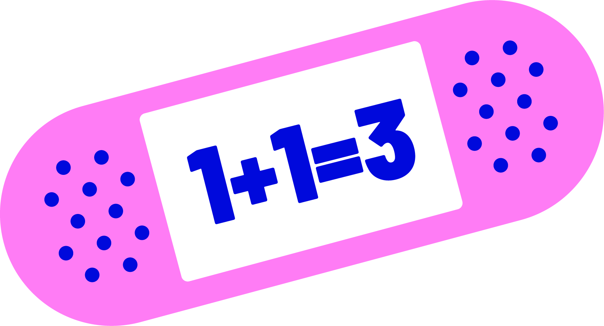
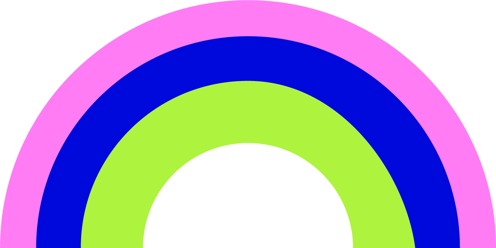

Ad Platform Digest
All news
▾
All news
Search
Social
Programmatic
🇺🇸 EN
▾
🇺🇸 EN
🇷🇺 RU
🇪🇸 ES
🇷🇸 SR
The
Bi-Weekly
Brief
updates
platforms
min read

Other editions
View all editions
That's a wrap
Spot something worth testing?
Share it in the channel!
Hope this was useful.
See you in two weeks✨
